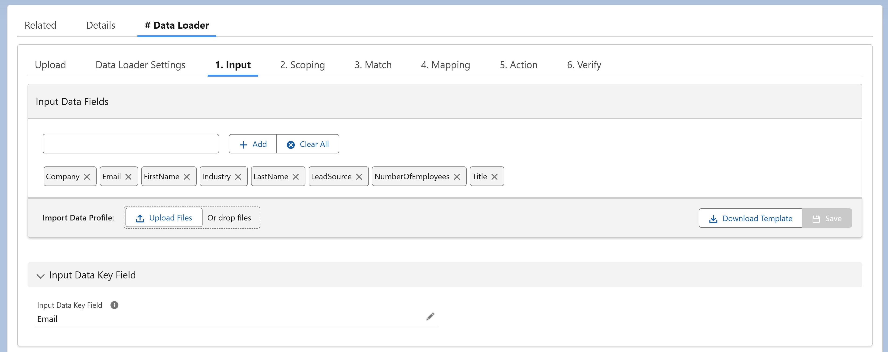

In #Data Loader, Input defines the data profile of an uploaded CSV file — specifying how its columns map to fields in DSP. This structure is then used in Scoping and Field Mappings to prepare the data for processing.
Unlike other rules engines, where data comes directly from a Salesforce object, the Input step ensures uploaded CSV data is correctly interpreted and aligned before transformation and execution.
